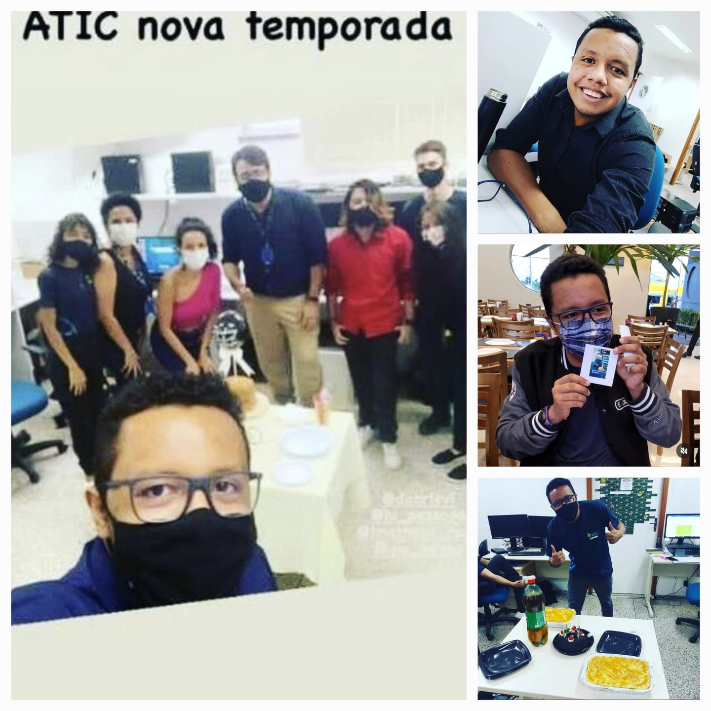
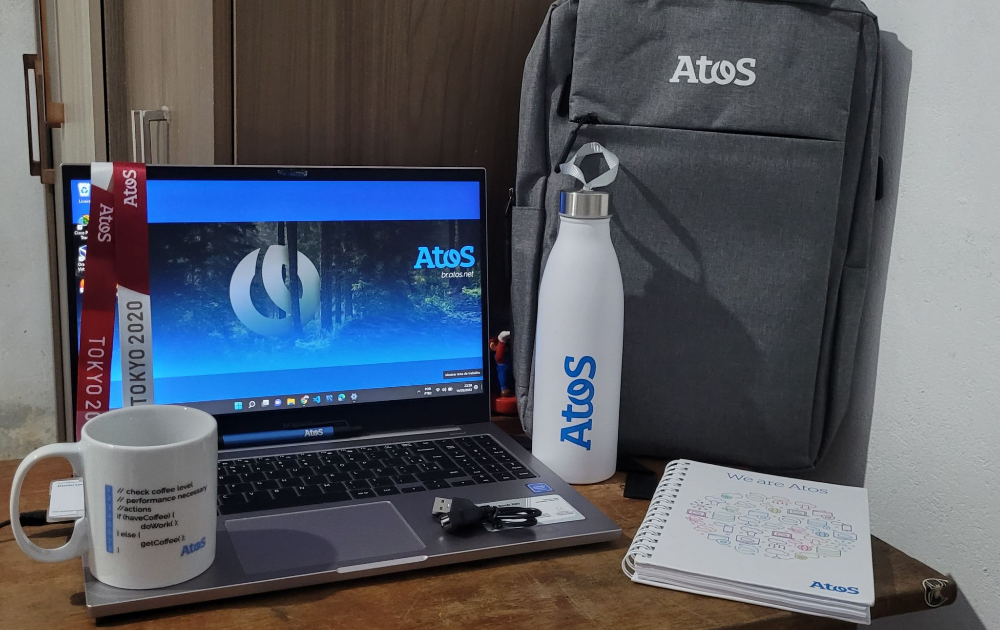
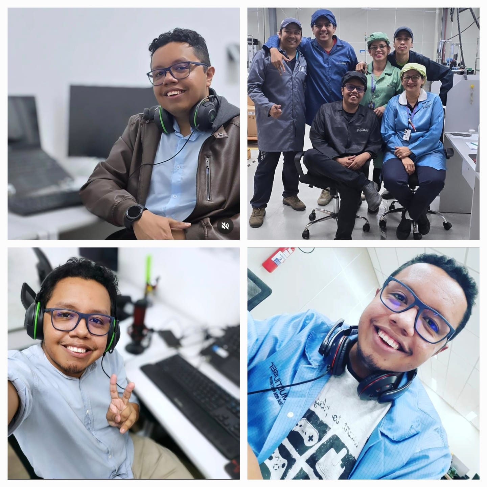

Estágio de TI
Centro de Educação Tecnológica do Amazonas
2020 - 2022

Sobre:
Minha Trajetória no Estágio de TI
Comecei minha jornada no setor de Tecnologia da Informação no Centro de Educação Tecnológica do
Amazonas
(CETAM). Essa experiência foi, sem dúvida, uma das melhores coisas que aconteceram na minha vida. No
CETAM, tive a oportunidade de aprender de tudo um pouco, desde suporte e atendimento ao usuário até
infraestrutura e montagem de servidores.
Logo no início, percebi que tinha muita sorte em estar cercado por grandes profissionais. Eles não
apenas compartilhavam seus conhecimentos, mas também faziam isso de uma maneira acessível e sem
exasperação, o que tornou o ambiente de aprendizado extremamente agradável e produtivo. Aprendi a
resolver problemas técnicos, a prestar um atendimento de qualidade aos usuários e a compreender os
detalhes da infraestrutura de TI, incluindo a montagem e manutenção de servidores.
O mais valioso dessa experiência foi o apoio contínuo que recebi. Mesmo após o término do estágio,
mantenho contato com esses profissionais que me mentoraram. Eles continuam sendo uma fonte de
inspiração
e orientação na minha carreira.
Este estágio não apenas me forneceu habilidades técnicas essenciais, mas também me ensinou a
importância
do trabalho em equipe e da comunicação eficaz. Sou muito grato por essa oportunidade e pelas
conexões
duradouras que fiz ao longo do caminho.
Analista de Suporte N2
Atos Brasil
2022 - 2022

Sobre:
Minha primeira experiência com carteira assinada foi como Analista de Suporte N2 na Atos Brasil.
Nesse
cargo, fui responsável por prestar suporte técnico de field service aos clientes internos (usuários)
da
fábrica de medicamentos Novamed - EMS. Minha atuação abrangia diversas áreas críticas para o bom
funcionamento da infraestrutura de TI da empresa.
Entre minhas responsabilidades, destacava-se o atendimento de Helpdesk para a unidade de Hortolândia
-
SP. Além disso, oferecia suporte a servidores, especialmente File Servers, garantindo que os dados e
informações estivessem sempre acessíveis e seguros para todos os usuários. Meu trabalho também
incluía
suporte a sistemas corporativos essenciais como SAP e EBR, ferramentas fundamentais para as
operações
diárias da empresa.
Outra área em que atuei foi no cabeamento estruturado, garantindo que a infraestrutura física de rede
estivesse sempre em perfeito estado para suportar as operações tecnológicas da empresa.
Durante minha trajetória na Atos Brasil, pude aplicar e expandir os conhecimentos adquiridos no meu
estágio anterior, enfrentando novos desafios e aprimorando minhas habilidades técnicas e de
atendimento
ao cliente. Essa experiência foi crucial para o meu desenvolvimento profissional, proporcionando-me
um
entendimento aprofundado sobre suporte técnico e a importância de uma infraestrutura de TI robusta e
bem
gerenciada.
Analista de Suporte de TI Jr.
Grupo Multi - Multilaser
2022 - 2024

Sobre:
Atualmente, atuo como Analista de Suporte de TI Jr. no Grupo Multi - Multilaser, especificamente no
segundo turno da fábrica em Manaus. Meu papel principal é resolver problemas técnicos que surgem
durante
as operações diárias, o que envolve lidar com questões de conectividade de rede, hardware e
software.
Além disso, presto suporte ao time de Segurança da Informação, colaborando na implementação e
manutenção
das medidas de segurança necessárias para proteger os sistemas e dados da empresa. Essa função exige
um
entendimento sólido das melhores práticas de segurança e a capacidade de aplicar essas práticas de
forma
eficaz.
Para desempenhar minhas funções com excelência, é crucial ter habilidades de comunicação eficazes.
Isso
me permite entender as necessidades dos usuários e explicar soluções de forma clara e compreensível.
O
trabalho em equipe também é essencial, não apenas com meus colegas de TI, mas também com outros
departamentos da empresa, garantindo que todos os aspectos técnicos estejam alinhados com as
necessidades operacionais.
Em resumo, meu objetivo como Analista de Suporte de TI Jr. é garantir o funcionamento contínuo e
eficiente dos sistemas de TI, bem como contribuir para a segurança dos dados. Dessa forma,
proporciono
um ambiente de trabalho eficiente e seguro para todos na fábrica, ajudando a manter as operações da
Multilaser fluindo sem problemas.